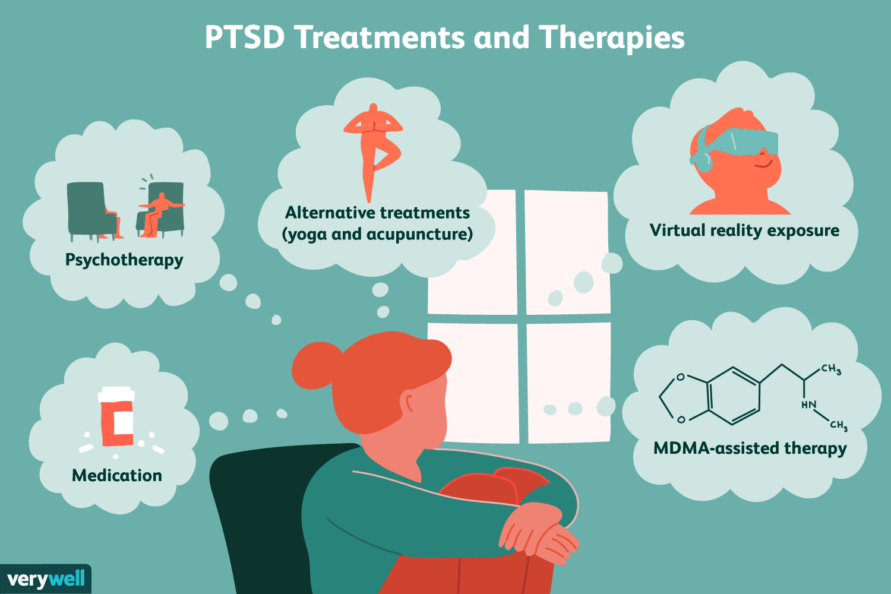

Post-Traumatic Stress Disorder

PTSD
PTSD is a stress disorder that one might have after a traumatic event -- such as experiencing abuse, accidents, terroist acts, natural disasters, war or combat, and more. PTSD is generally only related to one main traumatic event.
- memories of the traumatic event that come about unwanted
- flashbacks (reliving the traumatic events as if they are happening again
- nightmares related to experienced trauma or otherwise having trouble with sleeping
- severe distress (physical or emotional) when encountering a reminder of the experienced trauma
- frightening thoughts
- avoiding thinking about or discussing the experienced trauma
- avoiding reminders of the experienced trauma (such as situations, people, activities, thoughts, feelings, etc.)
- increased negativity
- feelings of fear, blame, guilt, anger, shame, or worry
- memory issues, particularly regarding the experienced trauma
- feeling detached or alone
- loss of interest in previously pleasurable activities
- feeling numb or having difficulty experiencing positive emotions
- irritability or aggressive behavior
- being easily frightened or startled, feeling very vigilant or ready for danger
- trouble with concentration
- self-destructive behavior
CPTSD
CPTSD (or Complex Post-traumatic Stress Disorder) is different from general PTSD in that it stems from repreated or prolonged exposure to trauma. Its symptoms are similar, but CPTSD includes:
- severe issues with emotional regulation
- intense feelings of shame or another kind of negative perception of oneself
- chronic difficulties with relationships